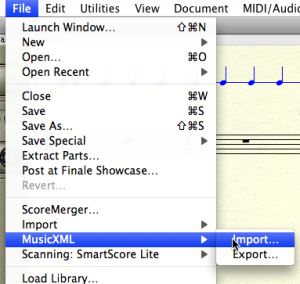
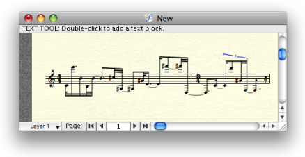

OpenMusic DocumentationHiérarchie de section : OM 6.6 User Manual > Score Objects > Export / Import > Export
OpenMusic DocumentationHiérarchie de section : OM 6.6 User Manual > Score Objects > Export / Import > Export
Navigation : page précédente | page suivante
Attention, votre navigateur ne supporte pas le javascript ou celui-ci à été désactivé. Certaines fonctionnalités de ce guide sont restreintes.
Export
Exporting OM score objects as external files can be done from the boxes' contextual menu, from the score editors (menu File / Export) or using the dedicated boxes in a patch from the Functions / Score / Import/Export menu.
In this page we show an example of score export using the MusicXML format.
Import/Export Formats and Generalities
Exporting a Voice in MusicXML
Option 1 : The editor |
{kind=link}
Option 2 : The editor export-musicxml box. The export procedure is triggered at evaluating the box connected to a compatible type of object (here, voice or poly). |
{kind=link}
Using the Export Box Options
The export boxes generally present a set of options for storage in a given format.
In particular, the "output file" option allows to connect the file name directly and avoids the file chooser dialog each time a file has to be saved. |
{kind=link}
Importing the File in Finale

|
To import an XML file in Finale, you can choose |

Références :
Plan :
Navigation : page précédente | page suivante
A propos...(c) Ircam - Centre Pompidou